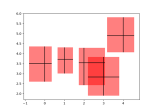

matplotlib.patches.Rectangle#
- class matplotlib.patches.Rectangle(xy, width, height, *, angle=0.0, rotation_point='xy', **kwargs)[source]#
Bases:
PatchA rectangle defined via an anchor point xy and its width and height.
The rectangle extends from
xy[0]toxy[0] + widthin x-direction and fromxy[1]toxy[1] + heightin y-direction.: +------------------+ : | | : height | : | | : (xy)---- width -----+
One may picture xy as the bottom left corner, but which corner xy is actually depends on the direction of the axis and the sign of width and height; e.g. xy would be the bottom right corner if the x-axis was inverted or if width was negative.
- Parameters:
- xy(float, float)
The anchor point.
- widthfloat
Rectangle width.
- heightfloat
Rectangle height.
- anglefloat, default: 0
Rotation in degrees anti-clockwise about the rotation point.
- rotation_point{'xy', 'center', (number, number)}, default: 'xy'
If
'xy', rotate around the anchor point. If'center'rotate around the center. If 2-tuple of number, rotate around this coordinate.
- Other Parameters:
- **kwargs
Patchproperties Property
Description
a filter function, which takes a (m, n, 3) float array and a dpi value, and returns a (m, n, 3) array and two offsets from the bottom left corner of the image
unknown
bool
antialiasedoraabool or None
CapStyleor {'butt', 'projecting', 'round'}BboxBaseor Nonebool
Patch or (Path, Transform) or None
color or None
color or None
color or None
bool
str
{'/', '\', '|', '-', '+', 'x', 'o', 'O', '.', '*'}
unknown
color or 'edge' or None
bool
JoinStyleor {'miter', 'round', 'bevel'}object
{'-', '--', '-.', ':', '', ...} or (offset, on-off-seq)
float or None
bool
list of
AbstractPathEffectNone or bool or float or callable
bool
(scale: float, length: float, randomness: float)
bool or None
str
bool
float
- **kwargs
See also
FancyBboxPatchA rectangle with a fancy box style, e.g. rounded corners.
- get_patch_transform()[source]#
Return the
Transforminstance mapping patch coordinates to data coordinates.For example, one may define a patch of a circle which represents a radius of 5 by providing coordinates for a unit circle, and a transform which scales the coordinates (the patch coordinate) by 5.
- property rotation_point#
The rotation point of the patch.
- set(*, agg_filter=<UNSET>, alpha=<UNSET>, angle=<UNSET>, animated=<UNSET>, antialiased=<UNSET>, bounds=<UNSET>, capstyle=<UNSET>, clip_box=<UNSET>, clip_on=<UNSET>, clip_path=<UNSET>, color=<UNSET>, edgecolor=<UNSET>, edgegapcolor=<UNSET>, facecolor=<UNSET>, fill=<UNSET>, gid=<UNSET>, hatch=<UNSET>, hatch_linewidth=<UNSET>, hatchcolor=<UNSET>, height=<UNSET>, in_layout=<UNSET>, joinstyle=<UNSET>, label=<UNSET>, linestyle=<UNSET>, linewidth=<UNSET>, mouseover=<UNSET>, path_effects=<UNSET>, picker=<UNSET>, rasterized=<UNSET>, sketch_params=<UNSET>, snap=<UNSET>, transform=<UNSET>, url=<UNSET>, visible=<UNSET>, width=<UNSET>, x=<UNSET>, xy=<UNSET>, y=<UNSET>, zorder=<UNSET>)[source]#
Set multiple properties at once.
a.set(a=A, b=B, c=C)
is equivalent to
a.set_a(A) a.set_b(B) a.set_c(C)
In addition to the full property names, aliases are also supported, e.g.
set(lw=2)is equivalent toset(linewidth=2), but it is an error to pass both simultaneously.The order of the individual setter calls matches the order of parameters in
set(). However, most properties do not depend on each other so that order is rarely relevant.Supported properties are
Property
Description
a filter function, which takes a (m, n, 3) float array and a dpi value, and returns a (m, n, 3) array and two offsets from the bottom left corner of the image
float or None
unknown
bool
antialiasedoraabool or None
(left, bottom, width, height)
CapStyleor {'butt', 'projecting', 'round'}BboxBaseor Nonebool
Patch or (Path, Transform) or None
color or None
color or None
color or None
bool
str
{'/', '\', '|', '-', '+', 'x', 'o', 'O', '.', '*'}
unknown
color or 'edge' or None
unknown
bool
JoinStyleor {'miter', 'round', 'bevel'}object
{'-', '--', '-.', ':', '', ...} or (offset, on-off-seq)
float or None
bool
list of
AbstractPathEffectNone or bool or float or callable
bool
(scale: float, length: float, randomness: float)
bool or None
str
bool
unknown
unknown
(float, float)
unknown
float
- set_angle(angle)[source]#
Set the rotation angle in degrees.
The rotation is performed anti-clockwise around xy.
- set_bounds(*args)[source]#
Set the bounds of the rectangle as left, bottom, width, height.
The values may be passed as separate parameters or as a tuple:
set_bounds(left, bottom, width, height) set_bounds((left, bottom, width, height))
- set_xy(xy)[source]#
Set the left and bottom coordinates of the rectangle.
- Parameters:
- xy(float, float)
- property xy#
Return the left and bottom coords of the rectangle as a tuple.
Examples using matplotlib.patches.Rectangle#


Create boxes from error bars using PatchCollection